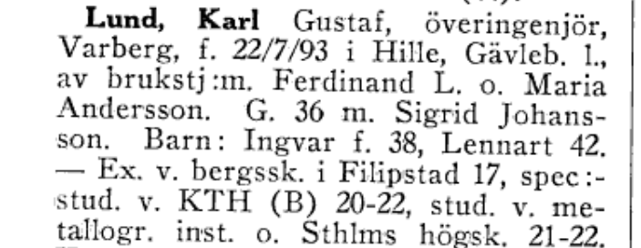
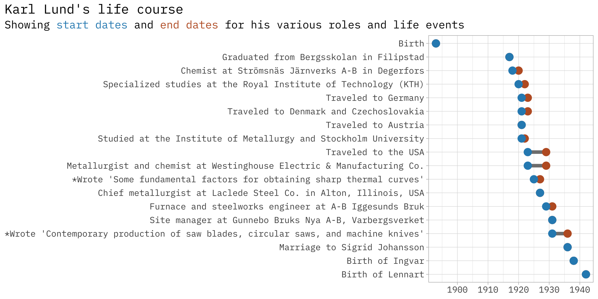

def translate_and_structure_text(swedish_text):
try:
# Translate the Swedish text to English
translate_prompt = f"Translate the following abbreviated Swedish biography to English: {swedish_text}"
translation_response = openai.ChatCompletion.create(
model="gpt-3.5-turbo",
messages=[
{"role": "system", "content": "You are an expert on Swedish family history."},
{"role": "user", "content": f"{translate_prompt}"}
]
)Wired for Success: Sweden’s Electrical Innovators in the Age of Industrial Transformation
Labour Mobility Lab in Lund
Jonathan Jayes - Lund University
November 20, 2023
Motivation
Electrification is a cannonical example of a General Purpose Technology (GPT)
When this new technology was adopted in Sweden:
- It made individuals richer üí∞üîã
- It lowered inequality üìâü§ù
- It allowed structural change on the labor market üîßüíº
What we want to know next:
- Who were the innovators or adopters? ü§îüöÄ
- Did they move to opportunity? üèÉ‚Äç‚ôÄÔ∏èüíº
- How much training did they have in the new technology? üéì‚ö°Ô∏è
- Were did they get this training? üè´üîå
Motivation
- Background: Return Migrants and Occupational Mobility in Sweden üåç‚û°Ô∏èüá∏üá™
- Return migrants brought back financial capital, often invested locally, but didn’t show much occupational upgrading on average.
- How are the individuals at the top of the skill distribution different from those who returned to farm?
- Where did they move back to, how did their education change?
Research question
How important was migration and skill adoption for the electricity adjascent technology development in Sweden?
What I want you to take away from today as researchers
NLP tasks that used to be very challenging / time consuming are no longer!
We can use the OpenAI API to structure data from free text at very low cost.
It is a General Purpose Technology that can both process data and also inform our workflow as researchers.

Structuring biographies
Who is who?
Vem är Vem? is a Swedish biographical encyclopedia that was published in two editions of five volumes each in 1945–1950 and 1962–1968 by Bokförlaget Vem är Vem.
The intention was, according to the publishers, to draw attention to people who were at the height of their activities, even if they were younger, in influential or otherwise noted positions in different areas.
Biographies and career trajectories of ~ 75,000 individuals!
9 of the 11 volumes are digitized by librarians in Uppsala – thank you <3

Vem är Vem? Example page

Vem är Vem?
Vem är Vem? Example biography
Vem är Karl Lund?
Lund, Karl Gustaf, chief engineer, born on July 22, 1893, in Hille, Gävleborgs län, Sweden, son of factory worker Ferdinand L. and Maria Andersson. Married in 1936 to Sigrid Johansson. Children: Ingvar (born 1938), Lennart (born 1942). — Graduated from Bergsskolan in Filipstad in 1917, specialized studies at the Royal Institute of Technology (KTH) from 1920 to 1922, studied at the Institute of Metallurgy and Stockholm University in 1921-1922. Chemist at Strömsnäs Järnverks A-B in Degerfors from 1918 to 1920, metallurgist and chemist at Westinghouse Electric & Manufacturing Co. in East Pittsburgh, PA, USA, from 1923 to 1926 and 1928 to 1929, chief metallurgist at Laclede Steel Co. in Alton, Illinois, USA, in 1927, furnace and steelworks engineer at A-B Iggesunds Bruk from 1929 to 1931, site manager at Gunnebo Bruks Nya A-B, Varbergsverket, since 1931. Member of the municipal executive committee, deputy chairman of the economic department, deputy member of the board of the power plant, chairman of Varbergs Sparbank, employer representative in the district council of the county labor board, member of the board of Varbergs Luftskyddsförening (Varberg Air Protection Association), secretary of Varbergs Högerförening (Varberg Conservative Association), chairman of the railway sick fund, and Plant Society for Small Bird Friends.
Vem är Karl Lund?
Traveled to Germany in 1921, 1923, 1930, and 1936, Denmark, Czechoslovakia in 1921, 1922, and 1923, Austria in 1921, and the USA from 1923 to 1929. Writings: “Some fundamental factors for obtaining sharp thermal curves” (Transactions of the American Society for Steel Treating, co-authored with C. Benedicks and W. H. Dearden, 1925), “Contemporary production of saw blades, circular saws, and machine knives” (Timber Industry, 1931). Hobbies: hunting and fishing.

Data pipeline
| Step | Process | |
|---|---|---|
| 1 | Scrape book data from website | üåê‚û°Ô∏èüìö |
| 2 | Split biographies on each page of a book | üìö‚û°Ô∏èüìÑ |
| 3 | Translate biographies | üìÑüîÑüìÑ |
| 4 | Structure biographies using Schema.org | üìÑ‚û°Ô∏èüîó |
| 5 | Augment data | üîóüîçüåçüéìüìö |
| 6 | Store data | üîóüìöüìÇ |
NLP challenges
- Many abbreviations and contractions
- DOB: “f.\s*(\d{2})\/(\d{2})/(\d{2})”
- Gävleborg County: “Gävleb. l.”
- Similar structure for each entry but not exactly the same information in the same order

1. Translate ü§ñ
Using OpenAI’s GPT-3.5 chat API:
We tell the system “You are an expert in Swedish family history”
Then we ask it to translate the Swedish text to English
2. Structure ü§ñ

2. Structure ü§ñ
Using OpenAI’s GPT-3.5 chat API:
We tell the system “You are an expert in Swedish family history and the Schema.org/Person format”
We provide it the original Swedish and English translation, and ask it to structure the biography in Schema.org/Person format as a JSON object
structure_prompt = f"Given the original Swedish biography: {swedish_text}\nAnd its English translation: {english_text}, Structure the biography in Schema.org/Person format as a JSON object. Include dates wherever possible. Only provide a RFC8259 compliant JSON response."
structure_response = openai.ChatCompletion.create(
model="gpt-3.5-turbo",
messages=[
{"role": "system", "content": "You are an expert on Swedish family history and the Schema.org/Person format."},
{"role": "user", "content": f"{structure_prompt}"}
]
)3. Augment ü§ñ
Using OpenAI’s GPT-4 chat API:
We create python code to geocode any addresses in the biography (in this example), as well as flagging the highest level of education, and extract any mention of patents or inventions in the biography.
def geocode_birthplace(birthplace, geolocator, geocoded_cache):
if isinstance(birthplace, dict):
if "name" in birthplace:
birthplace_name = birthplace["name"]
elif "address" in birthplace and "addressLocality" in birthplace["address"]:
birthplace_name = birthplace["address"]["addressLocality"]
else:
print(f"Invalid birthplace data: {birthplace}")
return None
elif isinstance(birthplace, str):
birthplace_name = birthplace
else:
print(f"Invalid birthplace data: {birthplace}")
return None
if birthplace_name not in geocoded_cache:
try:
location = geolocator.geocode(birthplace_name)
if location:
geocoded_cache[birthplace_name] = {
"latitude": location.latitude,
"longitude": location.longitude
}
time.sleep(1) # Add a 1-second delay between geocoding requests
except Exception as e:
print(f"Error geocoding birthplace {birthplace_name}: {e}")
return geocoded_cache.get(birthplace_name)Output
{
"original": "Lund, Karl Gustaf, överingenjör, Varberg, f. 22/7/93 i Hille, Gävleb. 1., av brukstj :m. Ferdinand L. o. Maria Andersson. G. 36 m. Sigrid Johansson. Barn: Ingvar f. 38, Lennart 42. — Ex. v. bergssk. i Filipstad 17, spec:-stud. v. KTH (B) 20-22, stud. v. me-tallogr. inst. o. Sthlms högsk. 21-22. Kemist v. Strömsnäs Järnverks A-B, Degerfors, 18-20, metallurg o. kemist v. Westinghouse Electric & Manuf. Co., East Pittsburgh, Pa, USA, 23-26 o. 28-29, chefsmetallurg v. Laclede Steel^Co., Ahon, 111., USA, 27, hytt-o. stålv.ing. v. A-B Iggesunds Bruk 29-31, platschef v. Gunnebo Bruks Nya A-B, Varbergsverket, sed. 31. Led. av drätselkamm., v. ordf. v. ekonomi-avd., suppl. i styr. f. elverket, huv:-man i Varbergs Sparbank, arb :giv. repr. i länsarb:ndns kretsråd, led. av styr. f. Varbergs luftsk ifören., sekr. i Varbergs högerfören., ordfs i järnv. sjukkassa o. Plant :sällsk. Småfågl. Vänner. Res. t. Tyskl. 21, 2^ 23, 30 o. 36, Danm., Tjeckoslov. 21, 22, 23, Österr. 21, USA 23-29. Skr.: Some fundamental factors for obtaining sharp thermal curves (Träns. Am. Soc. for Steel Treating, tills. m. C. Benedicks o. W. H. Dearden 25), Nutida fabrikation av sågblad, sågklingor o. maskinknivar (Trävaruind. 31). Hob-bies: jakt o. fiske.",
"translated": "Lund, Karl Gustaf, chief engineer, Varberg, born on July 22, 1893, in Hille, Gävleborgs län, Sweden, son of factory worker Ferdinand L. and Maria Andersson. Married in 1936 to Sigrid Johansson. Children: Ingvar (born 1938), Lennart (born 1942). — Graduated from Bergsskolan in Filipstad in 1917, specialized studies at the Royal Institute of Technology (KTH) from 1920 to 1922, studied at the Institute of Metallurgy and Stockholm University in 1921-1922. Chemist at Strömsnäs Järnverks A-B in Degerfors from 1918 to 1920.",
"structured": {
"@context": "http://schema.org",
"@type": "Person",
"name": "Karl Gustaf Lund",
"givenName": "Karl Gustaf",
"familyName": "Lund",
"gender": "Male",
"birthDate": "1893-07-22",
"birthPlace": {
"@type": "Place",
"address": {
"@type": "PostalAddress",
"addressLocality": "Hille",
"addressRegion": "Gävleborgs län",
"addressCountry": "Sweden"
}
},
"nationality": "Swedish",
"parent": [
{
"@type": "Person",
"name": "Ferdinand L.",
"jobTitle": "Factory Worker"
},
{
"@type": "Person",
"name": "Maria Andersson"
}
],
"spouse": {
"@type": "Person",
"name": "Sigrid Johansson",
"marriageDate": "1936"
},
"children": [
{
"@type": "Person",
"name": "Ingvar",
"birthDate": "1938"
},
{
"@type": "Person",
"name": "Lennart",
"birthDate": "1942"
}
],
"alumniOf": [
{
"@type": "EducationalOrganization",
"name": "Bergsskolan in Filipstad",
"graduationDate": "1917"
},
{
"@type": "EducationalOrganization",
"name": "Royal Institute of Technology (KTH)",
"attendancePeriod": "1920-1922"
},
{
"@type": "EducationalOrganization",
"name": "Institute of Metallurgy and Stockholm University",
"attendancePeriod": "1921-1922"
}
],
"worksFor": [
{
"@type": "Organization",
"name": "Strömsnäs Järnverks A-B",
"jobTitle": "Chemist",
"employmentPeriod": "1918-1920"
},
{
"@type": "Organization",
"name": "Westinghouse Electric & Manufacturing Co.",
"jobTitle": "Metallurgist and Chemist",
"employmentPeriod": "1923-1926, 1928-1929",
"location": "East Pittsburgh, PA, USA"
},
{
"@type": "Organization",
"name": "Laclede Steel Co.",
"jobTitle": "Chief Metallurgist",
"employmentPeriod": "1927",
"location": "Alton, Illinois, USA"
},
{
"@type": "Organization",
"name": "A-B Iggesunds Bruk",
"jobTitle": "Furnace and Steelworks Engineer",
"employmentPeriod": "1929-1931"
},
{
"@type": "Organization",
"name": "Gunnebo Bruks Nya A-B, Varbergsverket",
"jobTitle": "Site Manager",
"employmentPeriod": "1931-present"
}
],
"memberOf": [
{
"@type": "Organization",
"name": "Municipal Executive Committee"
},
{
"@type": "Organization",
"name": "Varbergs Sparbank",
"position": "Chairman"
},
{
"@type": "Organization",
"name": "Varbergs Luftskyddsförening",
"position": "Member of the Board"
},
{
"@type": "Organization",
"name": "Varbergs Högerförening",
"position": "Secretary"
}
],
"hasOccupation": {
"@type": "Occupation",
"name": "Chief Engineer"
},
"address": {
"@type": "PostalAddress",
"addressLocality": "Varberg",
"addressCountry": "Sweden"
},
"author": [
{
"@type": "CreativeWork",
"name": "Some fundamental factors for obtaining sharp thermal curves",
"publisher": "Transactions of the American Society for Steel Treating",
"author": ["Karl Gustaf Lund", "C. Benedicks", "W. H. Dearden"],
"datePublished": "1925"
},
{
"@type": "CreativeWork",
"name": "Contemporary production of saw blades, circular saws, and machine knives",
"publisher": "Timber Industry",
"author": "Karl Gustaf Lund",
"datePublished": "1931"
}
],
"interests": "Hunting and Fishing"
}
}Output
Birthplaces mapped
Sample of birthplaces of individuals with surnames beginning with A in Götaland 1948:
Birthplaces mapped
Birthplaces of individuals who studied at Royal Tehcnical Institute (KTH) in Who is Who in Industry and Business
Classifying occupations
graph LR
A[Queried Job Title: Civilingenjör, teknisk fysik Code: 2142] --> B[Text Embeddings]
B --> C[Classifier Algorithm]
C --> D[Similarity Ranking]
D --> E1[1. 2142 - Civilingenjörsyrken inom bygg och anläggning]
D --> E2[2. 8212 - Montörer, elektrisk och elektronisk utrustning]
D --> E3[3. 7215 - Stålkonstruktionsmontörer och grovplåtslagare]
D --> E4[4. 7319 - Musikinstrumentmakare och övriga konsthantverkare]
D --> E5[5. 1212 - Ekonomi- och finanschefer nivå 2]
style E1 fill:#ffff
style A fill:#ffff
Why is classification important?
We often want to classify an observation into a group in order to make inference about the group.
| Green and brown skills to be grouped | |
| Green Skills | Brown Skills |
|---|---|
| Renewable Energy System Design | Petroleum Geology |
| Sustainable Urban Planning | Oil and Gas Drilling Techniques |
| Environmental Impact Assessment | Fossil Fuel Plant Operations |
| Waste Management and Recycling | Pipeline Design and Maintenance |
| Water Resource Management | Refinery Operations |
| Sustainable Agriculture Practices | Coal Mining Techniques |
| Energy Efficiency Analysis | Fossil Fuel Transportation Logistics |
| Carbon Footprinting and Reduction | Emission Control Technologies |
| Green Building Design | Fossil-Based Power Generation |
| Conservation Biology | Risk Assessment in Fossil Fuel Industries |
My use case: how to measure career progression
{
"career": [
{
"occupational_title": "Chemist",
"workplace": "Strömsnäs Järnverks A-B",
"industry": "Metallurgy",
"start_date": "1918"
},
{
"occupational_title": "Metallurgist and Chemist",
"workplace": "Westinghouse Electric & Manufacturing Co.",
"industry": "Manufacturing",
"start_date": "1923"
},
{
"occupational_title": "Chief Metallurgist",
"workplace": "Laclede Steel Co.",
"industry": "Steel Production",
"start_date": "1927"
},
{
"occupational_title": "Furnace and Steelworks Engineer",
"workplace": "A-B Iggesunds Bruk",
"industry": "Metallurgy",
"start_date": "1929"
},
{
"occupational_title": "Site Manager",
"workplace": "Gunnebo Bruks Nya A-B, Varbergsverket",
"industry": "Metallurgy",
"start_date": "1931"
}
]
}Why was classification hard?
Fuzzy string matching doesn’t capture semantic similarity between words
- “chauffeur” is close to “car driver” semantically, but not close in text.
Many possible groups makes classification challenging for traditional ML models
- HISCO schema has 1,600 unit groups.
I spent months doing this last year to classify occupations to HISCLASS groups, hand labelling data and optimizing a support vector machine model.
It did not work

Why is classification easier now?
We make use of pre-trained large language models
- Benefit from semantic similarity
- Text embeddings mean we can have an arbitrary number of classes
What is an embedding?

What is an embedding?

Use embeddings to cluster skills
Assign HISCOs: process
graph TB
A[Collect HISCO Codes<br>and Descriptions] -->|Use OpenAI API| B[Convert HISCO Titles<br>and Descriptions to Vectors]
C[Receive Occupational<br>Strings] -->|Use OpenAI API| D[Convert Occupational<br>Strings to Vectors]
B --> E[Compare Vectors in<br>Vector Space]
D --> E
E --> F[Assign HISCO Code to<br>Occupational String<br>using Cosine Distance]
style A fill:#2B8CBE
style B fill:#be5d2b
style C fill:#2B8CBE
style D fill:#be5d2b
style E fill:#6f6fbf
style F fill:#F4FA58
How to get a text embedding?
# Define a function to get the text embedding
def get_embedding(text, model="text-embedding-ada-002"):
text = text.replace("\n", " ")
return openai.Embedding.create(input=[text], model=model)['data'][0]['embedding']
# Apply the get_embedding function to your 'hisco_text' column
df['ada_embedding'] = df['hisco_text'].apply(lambda x: get_embedding(x, model='text-embedding-ada-002'))Assign HISCOs: example
026 Metallurgists
Workers in this unit group advise on metallurgical problems and develop and control processes for the extraction of metals from their ores, study the properties and engineering characteristics of metals and develop new alloys, and develop and supervise metal manufacturing processes for making finished metal products.
Karl Lund in 1923
Metallurgist and Chemist at Westinghouse Electric & Manufacturing Co.
Assign HISCOs: codes projected from 1536 dimensions to 2 with UMAP
Assign HISCOs: Watchmaker Apprentice
| Closest HISCO codes to Watchmaker Apprentice | ||
| Rank | HISCO CODE | Occupational Description |
|---|---|---|
| 1 | 842 | Watch, Clock and Precision Instrument Makers |
| 2 | 830 | Blacksmiths, Toolmakers and Machine-Tool Operators |
| 3 | 810 | Woodworkers |
| 4 | 811 | Cabinetmakers |
| 5 | 839 | Blacksmiths, Toolmakers and Machine-Tool Operators |
Assign HISCOs: Shipyard Assistant Engineer
| Closest HISCO Codes to ‘Shipyard Assistant Engineer’ | ||
| Rank | HISCO CODE | Occupational Description |
|---|---|---|
| 1 | 43 | Ships' Engineers |
| 2 | 24 | Mechanical Engineer |
| 3 | 982 | Ships' Engine-Room Workers |
| 4 | 42 | Ships' Deck Officers and Pilots |
| 5 | 959 | Construction Workers |
Can we score how successful this is?
We can use a crosswalk from one schema to another as a test set, e.g. O * Net to ISCO: